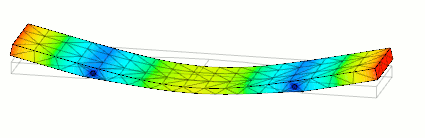

create audio from solid models
This site documents a series of experiments that were carried out in order to determine the limitations of physical modelling synthesis and its applications in musical instrument digital prototyping. This study will focus on the vibraphone, a pitched percussion instrument.
| Workflow Overview | includes a high-level description of the process and links to required software tools |
| Generating the Bar | the script used to generate vibraphone bars |
| Length Estimation | an experiment to determine the parameters of a bar with a specific target pitch |
| Modal Analysis | the steps to perform modal analysis in Fusion 360 |
| Generating the Sound | the steps to convert the output of the analysis to an audible sound wave |
| Isolating the Bar | an experiment to analyze the difference between the sound created by the vibraphone mallet and the bar |
| Results Analysis | an experiment to analyze the difference between the trimmed vibraphone recording and the simulated sound |